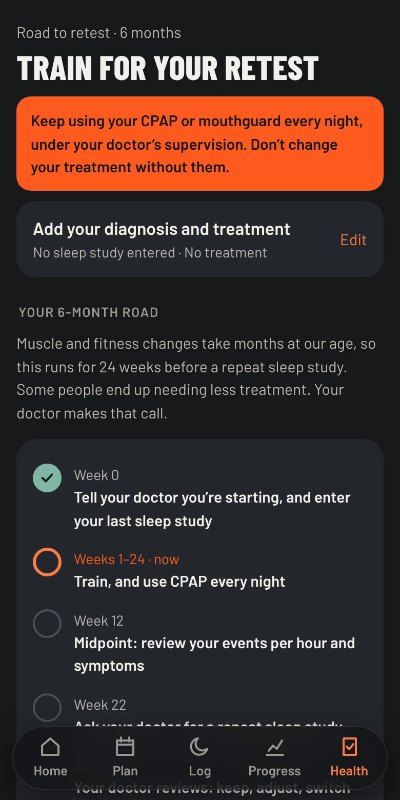
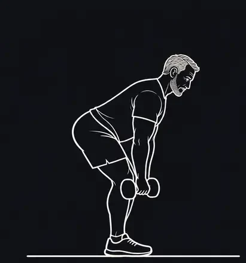
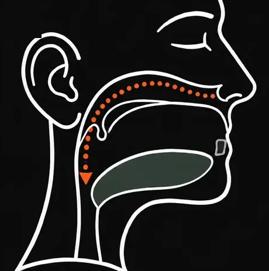
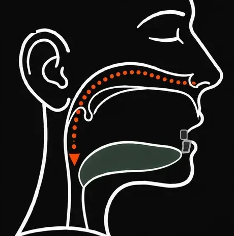
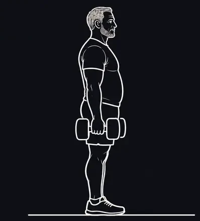
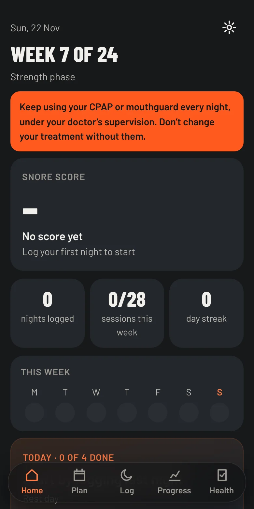

For men over 40 who snore
Train for quieter nights.
Breathe Strong is a 6-month app and training program built to help reduce snoring and support your sleep apnoea treatment. Lift, breathe, train your tongue and throat, and track what changes.
6 months of training, then a repeat sleep study. Your doctor decides. On CPAP or a mouthguard? You keep using it every night, under your doctor’s supervision.

Two ways in
Pick your path
I’ve started snoring
A 6-month program to reduce snoring, plus help getting tested if you need it.
- A 1-minute sleep risk check that tells you when to see your GP
- A GP visit summary you can hand over at the appointment
- Your plan adjusts when you enter a sleep study result
I already use CPAP or a mouthguard
The same 6-month program, then a repeat sleep study. Your doctor decides any change to treatment.
- Tell your doctor you’re starting, and enter your last sleep study
- Train for 24 weeks and use your CPAP every night
- Take a doctor summary to your repeat sleep study
The program
Six jobs. One plan.
The app sets out each day for you: a short airway routine, one main session and an evening wind-down. Three lifting days, three cardio days and a rest day each week.
Strength with bracing
Deadlifts, presses, rows, squats and carries, each done with a big belly breath and a tucked chin. Loads build from 3 sets of 10–12 to 4–5 sets of 4–6.
3 days a week · about 50 min
Tongue and throat routine
A guided set of tongue, throat and neck moves, shown step by step with airway drawings and a timer.
Every day · about 12 min
Breathing trainer, in and out
Resistance work for the muscles that pull air in and push it out, using a handheld trainer. The level goes up as you get stronger.
Every day · trainer sold separately
Cardio
Zone 2 at talking pace, nose breathing only, building from 30 to 45 minutes. Plus one long walk a week, with a loaded backpack if you like.
3 days a week
Evening wind-down
A walk after dinner, calf raises and an early last drink, so less fluid moves from your legs to your neck when you lie down.
Every evening · about 15 min
Tracking
Snore score each morning, CPAP hours and events, and your watch’s overnight numbers. The app charts them against where you started.
1 minute each morning





24 weeks
Why it takes 6 months
Muscle and fitness changes take months at our age. So the program runs for 24 weeks, with checkpoints along the way, before anything is compared with where you started.
- Weeks 1–2
Foundation
Learn the moves and the brace. 3 sets of 10–12. Log your snore score to set a baseline.
- Weeks 3–5
Build
Lifts get heavier: 4 sets of 6–8. First checkpoint at week 4.
- Weeks 6–8
Strength
4–5 sets of 4–6. This is where the bracing work counts most. Second checkpoint at week 8.
- Weeks 9–24
Progression
Small loads added week by week. Compare your snore score with your baseline at 3 months.
- 6 months
Retest
Compare with where you started. CPAP and mouthguard users book a repeat sleep study. Your doctor decides what happens next.

Tracking
Numbers you can take to your doctor
- Snore score. Logged each morning and charted week by week against your own baseline.
- CPAP. Hours used, events per hour and mask seal, with a nudge to call your sleep clinic if they slip.
- Watch data. Resting heart rate, breathing rate and blood oxygen, with unusual nights flagged.
- Triggers. Tag your nights and see which habits go with louder or quieter ones.
- Doctor summary. One page of your sleep studies, treatment, symptoms and progress to bring to an appointment.
No account. Your logs stay on your phone unless you choose to back them up.
Read this first
What Breathe Strong is not
Breathe Strong is a training and tracking program. It doesn’t diagnose or treat sleep apnoea, and it is not a way to get off CPAP.
If you use CPAP or a mouthguard
- Keep using it every night, under your doctor’s supervision.
- Don’t change your treatment without them.
- After 6 months, a repeat sleep study. Your doctor decides: keep, adjust, switch or stop.
See your GP soon if
- Anyone has seen you stop breathing, choke or gasp in your sleep.
- You’ve felt drowsy while driving. Don’t drive if you feel drowsy.
- You’re often tired in the day, even after a full night.
Questions
Straight answers
Will this get me off CPAP?
We don’t promise that, and nobody honestly can. The deal is 6 months of training, then a repeat sleep study. Your doctor reads the result and decides whether anything about your treatment changes. Until then you use your CPAP every night.
Do I need a gym?
No. Choose gym, dumbbells at home, household gear such as water jugs and a backpack, or bodyweight only. Every lift has a version for each.
What do I need to buy?
A handheld breathing trainer, sold by other companies. The app lists where to get one in your region. For your snore score you can use a snore recording app on your phone and type the number in each morning.
How much time does it take?
About 12 minutes for the airway routine and 15 for the evening wind-down each day, plus the main session: around 50 minutes on lifting days and 30 to 45 on cardio days. One rest day a week.
Where does my data go?
Nowhere, unless you send it. There’s no account, and your logs stay on your phone. You can back them up to iCloud Drive or Google Drive from Settings.
How do I get the app?
The tester version runs in your phone’s browser, so there’s nothing to install from an app store. On iPhone, add it to your Home Screen first, then open it from there.
What does it cost?
The tester app is open now. The full program goes on sale soon, and the price will be posted here when it does.
Start with week one
Five quick choices and you’re in. Open it on your phone.
Full program on sale soon.